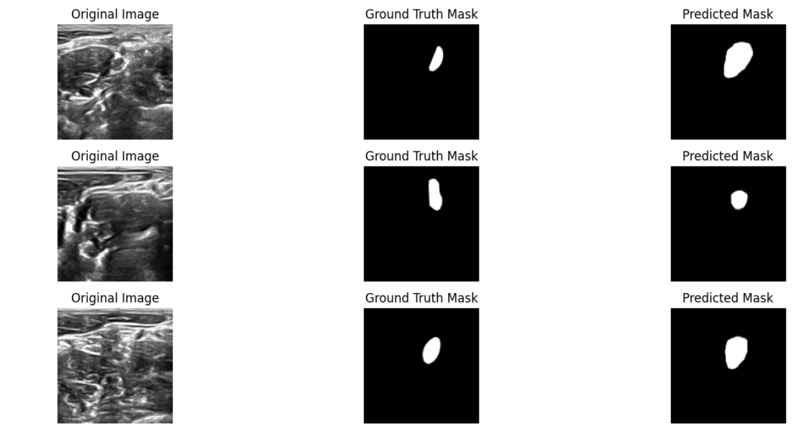

Implemented and compared multiple machine learning and deep learning models — including LSTM, BiLSTM with Attention, CNN, RNN, SVM, and Gradient Boosting —
to forecast Tesla stock prices (2010–2024). The BiLSTM-Attention model achieved the best performance (MAE = 0.0153, R² = 0.94), demonstrating strong accuracy and robustness in sequential data prediction.


Designed and implemented a modern data warehouse integrating ERP and CRM data using SQL Server.
Built ETL pipelines for cleansing and modeling (Star Schema) and developed SQL-based analytics to uncover customer behavior, product performance, and sales trends.
Delivered actionable BI dashboards in Tableau for data-driven decisions.

Developed and compared six deep learning models (U-Net, DenseNet, VGG, MobileNet, TransCGUNet, and the proposed SK-U-Net) for medical image segmentation.
The new SK-U-Net model integrates Selective Kernel modules for dynamic receptive field adjustment, achieving strong generalization and improved segmentation accuracy on complex ultrasound data.